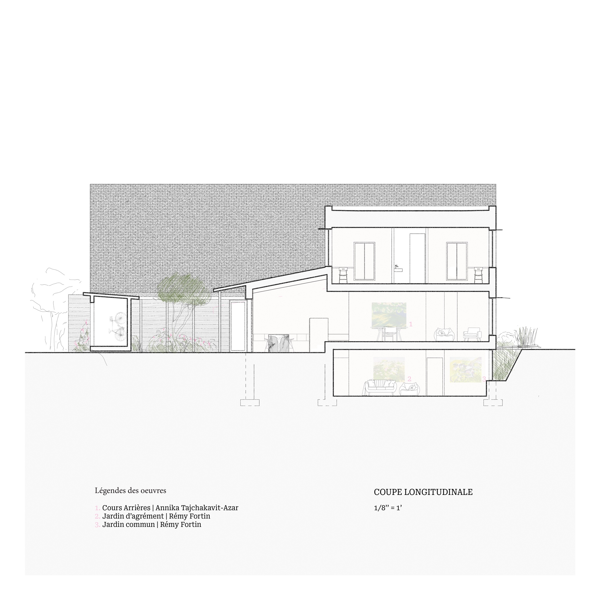

Installée entre deux bâtiments ouvriers typiques du quartier de Pointe-Saint- Charles, la nouvelle maison unifamiliale tente de créer un contact puissant entre ses quatre habitants et un environnement extérieur omniprésent. Le revêtement extérieur de brique rouge entre en dialogue avec les bâtiments issus de l’architec- ture vernaculaire du quartier et la volonté de créer un espace extérieur au jardin central s’inspire des maisons de campagne. Ensemble ainsi qu’avec sa matérialité, la maison propose au client une promenade guidée par les différents jardins.
fig. 1
fig. 2

fig. 3

fig. 4

fig. 5

fig. 6 
fig. 7

fig. 8

fig. 9

fig. 10
Merci aux artistes Rémi Fortin et Annika Tajchakavit-Azar pour m'avoir permis d'utiliser leurs œuvres dans le cadre de la production de la présentation de ce projet.